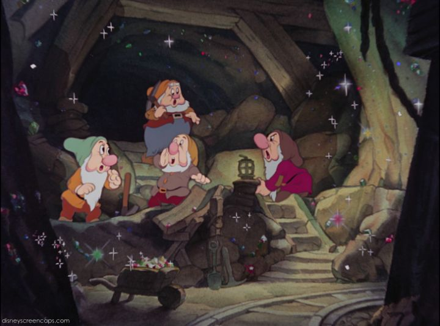

Ah, "Snow White and the Seven Dwarfs"... the one that started it all...Just try to imagine cinema in the 1930's. Movie theaters are all the rage, and "color" and "talking pictures" are just starting to become mainstream. This is well before internet-streaming, VHS home video, or even television! Apparently, you'd go into a movie theater to get the news, feature-films, and even short cartoons in between to pass the time. Cartoons were popular, but still primarily kids-stuff, and limited to the short format. That's when entrepreneur Walt Disney made a gamble for his animation studio: to create the first feature-length animated film, for children and adults to both marvel at. This would be 1937's "Snow White and the Seven Dwarfs," based on the open-source Grimm fairy tale, and it's success would launch Disney to become a household name for centuries to come. Even today, more than 80 years later, "Snow White" holds up remarkably well in terms of production quality, which you can't say about most movies this old. This speaks highly of the studio's committment to quality, and their preservation of the film decades later. By most measures, you could still release it in theaters today and get the same impressed reaction from audiences. And there are still new facts to discover about the production: for example, I assumed the producer, Walt Disney, had directed this and most other early Disney Studios films, but this was actually directed by David Hand, among several others.The story is widely known already (specifically the Disney version; I'm sure some fans don't even realize the story predates Disney). In an old kingdom, the Queen is obsessed with being the most beautiful, or "fairest," in the land. This is threatened by her princess, Snow White, and she assigns the girl to work as a maid in hopes of dirtying her persona. As a young adult, the all-seeing magic mirror again names Snow White as the fairest of them all, and the Queen orders her huntsman to murder Snow White in retailiation. Unable to kill the kind girl, the huntsman lets Snow White escape, where she discovers the home of a band of dwarfs, working each day as miners. They are able to live peacefully, but the Queen isn't through, and devises a plan to disguise as an old witch, selling apples to passersby, and giving Snow White a poisoned apple that will put her into an eternal sleep. Which can never be broken. Except, maybe by "true loves' first kiss" by a Prince Charming, but what are the odds of that?While the animation doesn't show its age, the storytelling and direction certainly does. It fits well with most other movies of the era. The story moves slowly, spending a lot of time of segments of dancing or comedy that don't move things forward. We spend a full 30 minutes with Snow White cleaning the drawfs house, them coming home to discover her, and washing up for supper. At least it's all entertaining, and can be especially transfixing for a young child's eyes. The dwarfs are each memorable (a hard feat, given there's seven of them), and it's fun to watch all the woodland creatures helping Snow White with all the chores. The Queen is a classic villain. The Prince is as plain as white bread, but he doesn't appear much.  This is a musical, and the songs are still catchy, even though the recording method doesn't hold up well today. The songs aren't very clear, often sung in chorus, and Snow White's voice in particular is a bit high-pitched. The score however is great, dramatizing everything well enough that you could watch without vocals and still understand the story. And did I mentiom how good the animation is? Some elements still seem like pure magic, considering they were rendered in the 1930's. Imagine how much work it was to paint several dozen moving woodland animals around Snow White in the forest? And how did they render such realistic water, with animated reflections no less?! There are some minor production mistakes that can be caught, especially in the first half of the movie, but it's still baffling to think about how smooth and realistic the animation is. One might be surprised at how dark "Snow White" is, perhaps even darker than you remember. As a child, I was a little sacred of the magic mirror and it's sewage-colored mask-face, both in film and on the back of the VHS box. Otherwise, I wasn't particularly scared at the other sequences, like running through the dark woods, or the transformation of the Queen into the old hag. But as an adult, it's easier to recognize how truly cruel and evil the Queen was, from ordering Snow White's heart be cut out and gifted to her in a box to prove her murder, or cackling at the thought of the eternal-sleeping princess being buried alive at her funeral. Of course, there are some minor things about the premise that look odd in retrospect, to modern audiences. Like the idea of seven adult men living together with one woman, and how that would look to outsiders. Or the idea of featuring dwarfs at all, and making any mention of their height, and how this might offend real height-disabled people. I'm not saying the sentiment is wrong, but it's a shame that I can't enjoy "Snow White" anymore as an adult without thinking about this. It's worth mentioning that, as a child, none of this had crossed my mind at all, and I enjoyed the story just fine; these thoughts are more a comment on adults of today rather than the movie. While "Snow White and the Seven Dwarfs" is undeniably a classic, and important in film history, it isn't my favorite Disney movie for a long shot. Princess movies are fun, but can be limiting to their audience, and this being their first also meant there was a lot of room to learn and grow in terms of story. Even so, this is probably the one Disney movie everyone needs to see. And chances are, you've already seen it.
- "Ani" More reviews can be found at : https://2danicritic.github.io/ Previous review: review_Snoopy,_Come_Home Next review: review_So_I_Can't_Play_H!